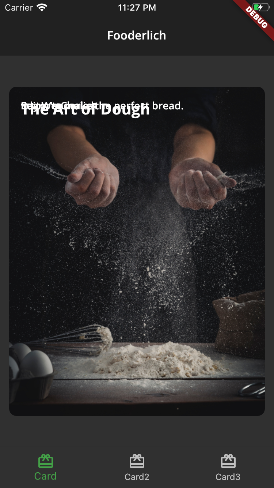

3 Basic Widgets¶
As you know, everything in Flutter is a widget. But how do you know which widget to use when? In this chapter, you’ll explore three categories of basic widgets, which you can use for:
- Structure and navigation
- Displaying information
- Positioning widgets
By the end of this chapter, you’ll use those different types of widgets to build the foundation of an app called Fooderlich, a social recipe app. You’ll build out the app’s structure and learn how to create three different recipe cards: the main recipe card, an author card and an explore card.
Ready? Dive in by taking a look at the starter project.
Getting started¶
Start by downloading this chapter’s project from the book materials repo https://github.com/raywenderlich/flta-materials.
Locate the projects folder and open starter. If your IDE has a banner that reads ‘Pub get’ has not been run, click Get dependencies to resolve the issue.
Run the app from Android Studio and you’ll see an app bar and some simple text:
lib/main.dart is the starting point for any Flutter app. Open it and you’ll see the following:
import 'package:flutter/material.dart';
void main() {
// 1
runApp(const Fooderlich());
}
class Fooderlich extends StatelessWidget {
// 2
const Fooderlich({super.key});
@override
Widget build(BuildContext context) {
// TODO: Create theme
// TODO: Apply Home widget
// 3
return MaterialApp(
// TODO: Add theme
title: 'Fooderlich',
// 4
home: Scaffold(
// TODO: Style the title
appBar: AppBar(title: const Text('Fooderlich')),
// TODO: Style the body text
body: const Center(child: Text('Let\'s get cooking 👩🍳')),
),
);
}
}
Take a moment to explore what the code does:
- Everything in Flutter starts with a widget.
runApp()takes in the root widgetFooderlich. - Every stateless widget must override the
build()method. - The
Fooderlichwidget starts by composing aMaterialAppwidget to give it a Material Design system look and feel. See https://material.io for more details about it. - The
MaterialAppwidget contains aScaffoldwidget, which defines the layout and structure of the app. The scaffold has two properties: anappBarand abody. AnAppbar’stitlecontains aTextwidget. Thebodyhas aCenterwidget, whosechildproperty is aTextwidget.
Styling your app¶
Since Flutter is cross-platform, it’s only natural for Google’s UI Toolkit to support the visual design systems of both Android and iOS.
Android uses the Material Design system, which you’d import like this:
import 'package:flutter/material.dart';
iOS uses the Cupertino system. Here’s how you’d import it:
import 'package:flutter/cupertino.dart';
To keep things simple, a rule of thumb is to pick only one design system for your UI. Imagine having to create if-else statements just to manage the two designs, let alone support different transitions and OS version compatibility.
Throughout this book, you’ll learn to use the Material Design system. You’ll find the look and feel of Material Design is quite customizable!
Note: Switching between Material and Cupertino is beyond the scope of this book. For more information about what these packages offer in terms of UI components, check out:
- Material UI Components: https://flutter.dev/docs/development/ui/widgets/material
- Cupertino UI Components: https://flutter.dev/docs/development/ui/widgets/cupertino
Now that you have settled on a design, you’ll set a theme for your app in the next section.
Setting a theme¶
You might notice the current app looks a little boring with the default blue, so you’ll spice it up with a custom theme! Your first step is to select the font for your app to use.
Using Google fonts¶
The google_fonts package supports over 900 fonts to help you style your text. It’s already included in pubspec.yaml and you have already added it to the app when clicking Pub Get before. You’ll use this package to apply a custom font to your theme class.
Defining a theme class¶
To share colors and font styles throughout your app, you’ll provide a ThemeData object to MaterialApp. In the lib directory, open fooderlich_theme.dart, which contains a predefined theme for your app.
Take a look at the code:
import 'package:flutter/material.dart';
import 'package:google_fonts/google_fonts.dart';
class FooderlichTheme {
// 1
static TextTheme lightTextTheme = TextTheme(
bodyText1: GoogleFonts.openSans(
fontSize: 14.0,
fontWeight: FontWeight.w700,
color: Colors.black,
),
headline1: GoogleFonts.openSans(
fontSize: 32.0,
fontWeight: FontWeight.bold,
color: Colors.black,
),
headline2: GoogleFonts.openSans(
fontSize: 21.0,
fontWeight: FontWeight.w700,
color: Colors.black,
),
headline3: GoogleFonts.openSans(
fontSize: 16.0,
fontWeight: FontWeight.w600,
color: Colors.black,
),
headline6: GoogleFonts.openSans(
fontSize: 20.0,
fontWeight: FontWeight.w600,
color: Colors.black,
),
);
// 2
static TextTheme darkTextTheme = TextTheme(
bodyText1: GoogleFonts.openSans(
fontSize: 14.0,
fontWeight: FontWeight.w700,
color: Colors.white,
),
headline1: GoogleFonts.openSans(
fontSize: 32.0,
fontWeight: FontWeight.bold,
color: Colors.white,
),
headline2: GoogleFonts.openSans(
fontSize: 21.0,
fontWeight: FontWeight.w700,
color: Colors.white,
),
headline3: GoogleFonts.openSans(
fontSize: 16.0,
fontWeight: FontWeight.w600,
color: Colors.white,
),
headline6: GoogleFonts.openSans(
fontSize: 20.0,
fontWeight: FontWeight.w600,
color: Colors.white,
),
);
// 3
static ThemeData light() {
return ThemeData(
brightness: Brightness.light,
checkboxTheme: CheckboxThemeData(
fillColor: MaterialStateColor.resolveWith(
(states) {
return Colors.black;
},
),
),
appBarTheme: const AppBarTheme(
foregroundColor: Colors.black,
backgroundColor: Colors.white,
),
floatingActionButtonTheme: const FloatingActionButtonThemeData(
foregroundColor: Colors.white,
backgroundColor: Colors.black,
),
bottomNavigationBarTheme: const BottomNavigationBarThemeData(
selectedItemColor: Colors.green,
),
textTheme: lightTextTheme,
);
}
// 4
static ThemeData dark() {
return ThemeData(
brightness: Brightness.dark,
appBarTheme: AppBarTheme(
foregroundColor: Colors.white,
backgroundColor: Colors.grey[900],
),
floatingActionButtonTheme: const FloatingActionButtonThemeData(
foregroundColor: Colors.white,
backgroundColor: Colors.green,
),
bottomNavigationBarTheme: const BottomNavigationBarThemeData(
selectedItemColor: Colors.green,
),
textTheme: darkTextTheme,
);
}
}
This code does the following:
- Define a
TextThemecalledlightTextTheme, which uses the Google font Open Sansand has a predefined font size and weight. Most importantly, the color of the text is black. - Then it defines
darkTextTheme. In this case, the text is white. - Next, it defines a static method,
light, which returns the color tones for a light theme using thelightTextThemeyou created in step 1. - Finally, define a static method,
dark, which returns the color tones for a dark theme using thedarkTextThemeyou created in step 2.
Your next step is to utilize the theme.
Using the theme¶
In main.dart, import your theme by adding the following beneath the existing importstatement:
import 'fooderlich_theme.dart';
Then replace the comment //TODO: Create theme with the following:
final theme = FooderlichTheme.dark();
To apply the new theme replace the comment // TODO: Add theme with the following:
theme: theme,
Next replace the comment // TODO: Style the title and the line below it with the following:
appBar: AppBar(
title: Text(
'Fooderlich',
style: theme.textTheme.headline6,
),
),
Finally, locate the comment // TODO: Style the body text and replace it and the code below it with the following:
body: Center(
child: Text('Let\'s get cooking 👩🍳',
style: theme.textTheme.headline1),
),
After all your updates, your code should look like this:
// 1
import 'fooderlich_theme.dart';
void main() {
runApp(const Fooderlich());
}
class Fooderlich extends StatelessWidget {
const Fooderlich({super.key});
@override
Widget build(BuildContext context) {
// 2
final theme = FooderlichTheme.dark();
// TODO: Apply Home widget
return MaterialApp(
// 3
theme: theme,
title: 'Fooderlich',
home: Scaffold(
appBar: AppBar(
title: Text('Fooderlich',
// 4
style: theme.textTheme.headline6,
),
),
body: Center(
child: Text('Let\'s get cooking 👩🍳',
// 5
style: theme.textTheme.headline1,
),
),
),
);
}
}
To recap, your updates:
- Imported the
FooderlichTheme. - Defined a variable that holds the theme.
- Added the
MaterialAppwidget’sthemeproperty. - Added
AppBartext styling. - Finally, added
bodytext styling.
Save your changes. Thanks to hot reload, you’ll see the updated theme nearly immediately.
To see the difference between light and dark mode, change the theme between FooderlichTheme.dark() and FooderlichTheme.light(). The two themes look like this:

Note: It’s generally a good idea to establish a common theme object for your app — especially when you work with designers. That gives you a single source of truth to access your theme across all your widgets.
Next, you’ll learn about an important aspect of building an app — understanding which app structure to use.
App structure and navigation¶
Establishing your app’s structure from the beginning is important for the user experience. Applying the right navigation structure makes it easy for your users to navigate the information in your app.
Fooderlich uses the Scaffold widget for its starting app structure. Scaffold is one of the most commonly-used Material widgets in Flutter. Next, you’ll learn how to implement it in your app.
Using Scaffold¶
The Scaffold widget implements all your basic visual layout structure needs. It’s composed of the following parts:
- AppBar
- BottomSheet
- BottomNavigationBar
- Drawer
- FloatingActionButton
- SnackBar
Scaffold has a lot of functionality out of the box!
The following diagram represents some of the aforementioned items as well as showing left and right nav options:
For more information, check out Flutter’s documentation on Material Components widgets, including app structure and navigation: https://flutter.dev/docs/development/ui/widgets/material
Now, it’s time to add more functionality.
Setting up the Home widget¶
As you build large-scale apps, you’ll start to compose a staircase of widgets. Widgets composed of other widgets can get really long and messy. It’s a good idea to break your widgets into separate files for readability.
To avoid making your code overly complicated, you’ll create the first of these separate files now.
Scaffold needs to handle some state changes, via a StatefulWidget. Your next step is to move code out of main.dart into a new StatefulWidget named Home.
In the lib directory, create a new file called home.dart and add the following:
import 'package:flutter/material.dart';
// 1
class Home extends StatefulWidget {
const Home({super.key});
@override
HomeState createState() => HomeState();
}
class HomeState extends State<Home> {
// TODO: Add state variables and functions
@override
Widget build(BuildContext context) {
return Scaffold(
appBar: AppBar(
title: Text(
'Fooderlich',
// 2
style: Theme.of(context).textTheme.headline6,
),
),
// TODO: Show selected tab
body: Center(
child: Text('Let\'s get cooking 👩🍳',
// 3
style: Theme.of(context).textTheme.headline1)),
// TODO: Add bottom navigation bar
);
}
}
Most of the Scaffold code looks like what you have in main.dart, but there are a few changes:
- Your new class extends
StatefulWidget. - The
AppBarstyle now reads:Theme.of(context).textTheme.headline6instead of:theme.textTheme.headline6.Theme.of(context)returns the nearestThemein the widget tree. If the widget has a definedTheme, it returns that. Otherwise, it returns the app’s theme. - As with the
AppBar, you’ve also updated theTextstyle to use theTheme.of(context).
Go back to main.dart, which you need to update so it can use the new Home widget. At the top, add the following import statement:
import 'home.dart';
Next replace // TODO: Apply Home widget and all the return MaterialApp()code below it with the following:
return MaterialApp(
theme: theme,
title: 'Fooderlich',
home: const Home(),
);
With that done, you’ll move on to addressing Scaffold’s bottom navigation.
Adding a BottomNavigationBar¶
Your next step is to add a bottom navigation bar to the scaffold. This will let your users navigate between tabs.
Return to home.dart, locate // TODO: Add bottom navigation bar and replace it with the following code:
// 4
bottomNavigationBar: BottomNavigationBar(
// 5
selectedItemColor:
Theme.of(context).textSelectionTheme.selectionColor,
// TODO: Set selected tab bar
// 6
items: const [
BottomNavigationBarItem(
icon: Icon(Icons.card_giftcard),
label: 'Card',
),
BottomNavigationBarItem(
icon: Icon(Icons.card_giftcard),
label: 'Card2',
),
BottomNavigationBarItem(
icon: Icon(Icons.card_giftcard),
label: 'Card3',
),
],
),
Take a moment to review the code. Here, you:
- Defined a
BottomNavigationBar. - Set the selection color of an item when tapped.
- Defined three bottom navigation tab bar items.
With that done, your app looks like this:
Now that you’ve set up the bottom navigation bar, you need to implement the navigation between tab bar items.
Navigating between items¶
Before you can let the user switch between tab bar items, you need to know which index they selected.
Locate // TODO: Add state variables and functions and replace it with the following:
// 7
int _selectedIndex = 0;
// 8
static List<Widget> pages = <Widget>[
// TODO: Replace with Card1
Container(color: Colors.red),
// TODO: Replace with Card2
Container(color: Colors.green),
// TODO: Replace with Card3
Container(color: Colors.blue)
];
// 9
void _onItemTapped(int index) {
setState(() {
_selectedIndex = index;
});
}
Here’s what you’ve added with this code:
_selectedIndexkeeps track of which tab is currently selected. The underscore in_selectedIndexsignifies it’s private. The selected index is the state being tracked by_HomeState.- Here, you define the widgets that will display on each tab. For now, when you tap between the different tab bar items, it shows container widgets of different colors. Soon, you’ll replace each of these with card widgets.
- This function handles tapped tab bar items. Here, you set the index of the item that the user pressed.
setState()notifies the framework that the state of this object has changed, then rebuilds this widget internally.
Note: In the next chapter, you’ll learn more about how widgets work under the hood. Stay tuned.
Next, locate // TODO: Show selected tab and replace it and the body in the Scaffoldwith:
body: pages[_selectedIndex],
As the framework rebuilds the widgets, it displays the container widget for the selected tab bar item.
Indicating the selected tab bar item¶
Now, you want to indicate to the user which tab bar item they currently have selected. Locate // TODO: Set selected tab bar and add the following code:
// 10
currentIndex: _selectedIndex,
// 11
onTap: _onItemTapped,
Here’s what’s going on with this code:
currentIndexwill tell the bottom navigation bar which tab bar item to highlight.- When the user taps on a tab bar item, it calls the
_onItemTappedhandler, which updates the state with the correctindex. In this case, it changes the color.
Because you’ve made changes to the state, you have two options to see the changes. You can either stop your app and restart it, which takes a bit of time, or you can use hot restart, which rebuilds your app in a matter of seconds.
Press the Hot Restart button on the Run window to see how fast it is:
After restarting, your app will look different for each tab bar item, like this:
Now that you’ve set up your tab navigation, it’s time to create beautiful recipe cards!
Creating custom recipe cards¶
In this section, you’ll compose three recipe cards by combining a mixture of display and layout widgets.
Display widgets handle what the user sees onscreen. Examples of display widgets include:
- Text
- Image
- Button
Layout widgets help with the arrangement of widgets. Examples of layout widgets include:
- Container
- Padding
- Stack
- Column
- SizedBox
- Row
Note: Flutter has a plethora of layout widgets to choose from, but this chapter only covers the most common. For more examples, check out https://flutter.dev/docs/development/ui/widgets/layout.
Composing Card1: the main recipe card¶
The first card you’ll compose looks like this:
Card1 is composed of the following widgets:
- Container: Groups all the other widgets together. It applies Padding and uses a BoxDecoration to describe how to apply shadows and rounded corners.
- Stack: Layers widgets on top of each other.
- Text: Displays the recipe content, like title, subtitle and author.
- Image: Shows the recipe’s art.
In the lib directory, create a new file called card1.dart and add the following code to it:
import 'package:flutter/material.dart';
class Card1 extends StatelessWidget {
const Card1({super.key});
// 1
final String category = 'Editor\'s Choice';
final String title = 'The Art of Dough';
final String description = 'Learn to make the perfect bread.';
final String chef = 'Ray Wenderlich';
// 2
@override
Widget build(BuildContext context) {
// 3
return Center(
// TODO: Card1 Decorate Container
child: Container(),
);
}
}
Take a moment to go over the code:
- Define string variables to display on the card. This is just sample data to help build the card.
- Every stateless widget comes with a
build()method that you override. - Start with a
Containerlaid out in the center.
Next, open home.dart and add the following import:
import 'card1.dart';
Locate // TODO: Replace with Card1 and replace the first container with the following:
const Card1(),
You’ve now set up Card1. Hot restart, and the app currently looks like this:
It’s a little bland, isn’t it? For your next step, you’ll spice it up with an image.
Adding the image¶
Switch to card1.dart. Locate // TODO: Card1 Decorate Container and replace the empty Container() below it with the following:
Container(
// 1
padding: const EdgeInsets.all(16),
// 2
constraints: const BoxConstraints.expand(
width: 350,
height: 450,
),
// 3
decoration: const BoxDecoration(
// 4
image: DecorationImage(
// 5
image: AssetImage('assets/mag1.png'),
// 6
fit: BoxFit.cover,
),
// 7
borderRadius: BorderRadius.all(Radius.circular(10.0)),
),
// TODO: Add a stack of text
)
Here are the arguments you added to Container:
- Apply a padding of 16 on all sides of the box. Flutter units are specified in logical pixels, which are like dp on Android.
- Constrain the container’s size to a width of 350 and a height of 450.
- Apply
BoxDecoration. This describes how to draw a box. - In
BoxDecoration, set upDecorationImage, which tells the box to paint an image. - Set which image to paint in the box using an
AssetImage, an image found in the starter project assets. - Cover the entire box with that image.
- Apply a corner radius of 10 to all sides of the container.
Save your changes to hot reload. Your app now looks like this:
Much better! But you still need to tell the user what they’re looking at.
Adding the text¶
You’re going to add three lines of text describing what the card does. Start by adding the following import statement to the top of the card1.dart file so that you can use your theme:
import 'fooderlich_theme.dart';
Next locate // TODO: Add a stack of text and replace it with the following:
child: Stack(
children: [
Text(
category,
style: FooderlichTheme.darkTextTheme.bodyText1,
),
Text(
title,
style: FooderlichTheme.darkTextTheme.headline5,
),
Text(
description,
style: FooderlichTheme.darkTextTheme.bodyText1,
),
Text(
chef,
style: FooderlichTheme.darkTextTheme.bodyText1,
),
],
),
Stack places these new widgets on top of each other. Here’s how it looks:

Well, that’s not quite right. Next, you’ll position the text so it’s readable.
Positioning the text¶
Replace the Stack() you just added with the following:
Stack(
children: [
// 8
Text(
category,
style: FooderlichTheme.darkTextTheme.bodyText1,
),
// 9
Positioned(
top: 20,
child: Text(
title,
style: FooderlichTheme.darkTextTheme.headline2,
),
),
// 10
Positioned(
bottom: 30,
right: 0,
child: Text(
description,
style: FooderlichTheme.darkTextTheme.bodyText1,
),
),
// 11
Positioned(
bottom: 10,
right: 0,
child: Text(
chef,
style: FooderlichTheme.darkTextTheme.bodyText1,
),
)
],
),
For the relevant Text, you apply a Positioned widget. That widget controls where you position the Text in the Stack. Here are the positions you’re using:
- The category, Editor’s Choice, stays where it is. Remember,
Containeralready applies a padding of 16 on all sides. - You place the title 20 pixels from the top.
- Here, you position the description 30 pixels from the bottom and 0 to the right.
- Finally, you position the chef’s name 10 pixels from the bottom-right.
After these updates, the app looks like this:
Great, the first card is finished now. It’s time to move on to the next!
Composing Card2: the author card¶
It’s time to start composing the next card, the author card. Here’s how it will look by the time you’re done:
Despite the differences in appearance, Card2 is similar to Card1. It’s composed of the following widgets:
- A
Containerwith aBoxDecorationdisplaying an image with rounded corners. - A custom author widget that displays the author’s profile picture, name and job title.
Textwidgets — but this time, notice Smoothies has a vertical rotation.IconButtonwith a heart on the top-right.
In the lib directory, create a new file called card2.dart. Add the following code:
import 'package:flutter/material.dart';
class Card2 extends StatelessWidget {
const Card2({super.key});
@override
Widget build(BuildContext context) {
return Center(
// 1
child: Container(
constraints: const BoxConstraints.expand(
width: 350,
height: 450,
),
decoration: const BoxDecoration(
image: DecorationImage(
image: AssetImage('assets/mag5.png'),
fit: BoxFit.cover,
),
borderRadius: BorderRadius.all(
Radius.circular(10.0),
),
),
// 2
child: Column(
children: [
// TODO: Add author information
// TODO: Add Positioned text
],
),
),
);
}
}
Taking a quick look at the code, you’ll notice the following:
- The
Centerwidget has aContainerchild widget which has three properties, the first two beingconstraintsanddecoration. - The third property is
childand it has aColumnwidget, which displays its children vertically.
Note: If you ever want to look at all your
TODOentries, open the TODO tab in Android Studio and you’ll see something similar:
Card2’s initial setup is similar to Card1. In home.dart, import Card2 as follows:
import 'card2.dart';
Next, locate // TODO: Replace with Card2 and replace it and the second Container()with:
const Card2(),
Then, perform a hot restart.
Tap the Card2 tab bar item. Your app should look like this:
Here’s how Card2’s layout will look after you’ve added the Column’s children widgets:
The column will display the following two widgets vertically:
- The author’s card
- The recipe’s titles
Your next step is to build these widgets.
Composing the author card¶
The following widgets make up the AuthorCard:
- Container: Groups all the widgets together.
- Row: Lays out the widgets horizontally and in the following order:
CircleImage,ColumnandIconButton. - Column: Lays out the two
Textwidgets vertically, with the name of the author above the author’s title. - CircleImage: A custom widget you’ll create next to show the author avatar.
- IconButton: A button that shows an icon.
Creating a circular avatar widget¶
Your first step is to create the author’s circular avatar.
In the lib directory, create a new file called circle_image.dart. Add the following code:
import 'package:flutter/material.dart';
class CircleImage extends StatelessWidget {
// 1
const CircleImage({
super.key,
this.imageProvider,
this.imageRadius = 20,
});
// 2
final double imageRadius;
final ImageProvider? imageProvider;
@override
Widget build(BuildContext context) {
// 3
return CircleAvatar(
backgroundColor: Colors.white,
radius: imageRadius,
// 4
child: CircleAvatar(
radius: imageRadius - 5,
backgroundImage: imageProvider,
),
);
}
}
Here’s how you created this new custom widget:
CircleImagehas two parameters:imageProviderandimageRadius.- The
imageRadiusandimageProviderproperty declarations. CircleAvataris a widget provided by the Material library. It’s defined as a white circle with a radius ofimageRadius.- Within the outer circle is another
CircleAvatar, which is a smaller circle that includes the user’s profile image. Making the inner circle smaller gives you the white border effect.
Setting up the AuthorCard widget¶
In the lib directory, create a new file called author_card.dart. Add the following code:
import 'package:flutter/material.dart';
import 'fooderlich_theme.dart';
import 'circle_image.dart';
class AuthorCard extends StatelessWidget {
// 1
final String authorName;
final String title;
final ImageProvider? imageProvider;
const AuthorCard({
super.key,
required this.authorName,
required this.title,
this.imageProvider,
});
// 2
@override
Widget build(BuildContext context) {
// TODO: Replace return Container(...);
return Container(
padding: const EdgeInsets.all(16),
child: Row(
children: [],
),
);
}
}
Here’s how this code works:
AuthorCardhas three properties:authorName, the author’s jobtitleand the profile image, whichimageProviderhandles.AuthorCardis grouped in a container and uses aRowwidget to lay out the other widgets horizontally.
You’ll come back to this widget later. For now, you’ll set things up so that hot reload will refresh the UI while you complete this widget.
Adding the AuthorCard widget to Card2¶
Open card2.dart and add the following imports:
import 'author_card.dart';
Then, locate // TODO: Add author information and replace it with the following:
const AuthorCard(
authorName: 'Mike Katz',
title: 'Smoothie Connoisseur',
imageProvider: AssetImage('assets/author_katz.jpeg'),
),
Now that you’ve added the AuthorCard, it’s time to go back to composing the author card widget itself.
Composing the AuthorCard widget¶
Open author_card.dart. Find // TODO: Replace return Container(...); and replace it and return Container(...);with the following:
return Container(
padding: const EdgeInsets.all(16),
child: Row(
// TODO: Add alignment
children: [
// 1
Row(
children: [
CircleImage(
imageProvider: imageProvider,
imageRadius: 28,
),
// 2
const SizedBox(width: 8),
// 3
Column(
crossAxisAlignment: CrossAxisAlignment.start,
children: [
Text(
authorName,
style: FooderlichTheme.lightTextTheme.headline2,
),
Text(
title,
style: FooderlichTheme.lightTextTheme.headline3,
)
],
),
],
),
// TODO: Add IconButton
],
),
);
Notice that the container has two Row widgets nested within each other. Here’s what the code does:
- The inner
Rowgroups theCircleImageand the author’sTextinformation. - Applies 8 pixels of padding between the image and the text.
- Lays out the author’s name and job title vertically using a
Column.
Hot reload and tap Card2’s tab bar button. Your app will now look like this:
Looking good, but there are a few important elements you still need to add.
Adding the IconButton widget¶
Next, you need to add the heart-shaped IconButton widget after the inner Row widget. The user will click this icon when they want to favorite a recipe.
Start by locating // TODO: Add IconButton and replacing it with the code below:
IconButton(
// 4
icon: const Icon(Icons.favorite_border),
iconSize: 30,
color: Colors.grey[400],
// 5
onPressed: () {
const snackBar = SnackBar(content: Text('Favorite Pressed'));
ScaffoldMessenger.of(context).showSnackBar(snackBar);
}),
Here’s a quick breakdown:
- Set the icon, size and color of the icon.
- When the user presses the icon, display a
snackbar.
Note: A snackbar is useful to briefly display information to users when an action has taken place. For example, when you delete an email, you can provide a user with an action to undo. In this case, the snackbar will tell the user that they have liked a recipe.
When you press the heart icon, your app will look like this:
Next, still in author_card.dart, locate // TODO: Add alignment and replace it with the following:
mainAxisAlignment: MainAxisAlignment.spaceBetween,
The outer Row widget applies a spaceBetween alignment. This adds extra space evenly between the outer row’s children, placing the IconButton at the far right of the screen.

Just one important element left to add: the text.
Composing the text¶
Return to card2.dart, and add the theme import:
import 'fooderlich_theme.dart';
Then locate // TODO: Add Positioned text and replace it with the following:
// 1
Expanded(
// 2
child: Stack(
children: [
// 3
Positioned(
bottom: 16,
right: 16,
child: Text(
'Recipe',
style: FooderlichTheme.lightTextTheme.headline1,
),
),
// 4
Positioned(
bottom: 70,
left: 16,
child: RotatedBox(
quarterTurns: 3,
child: Text(
'Smoothies',
style: FooderlichTheme.lightTextTheme.headline1,
),
),
),
],
),
),
Notice how convenient it is to use FooderlichTheme to apply text styles.
Now, take a look at the code:
- With
Expanded, you fill in the remaining available space. - Apply a
Stackwidget to position the texts on top of each other. - Position the first text 16 pixels from the bottom and 16 pixels from the right.
- Finally, position the second text 70 pixels from the bottom and 16 pixels from the left. Also apply a
RotatedBoxwidget, which rotates the text clockwise threequarterTurns. This makes it appear vertical.
After saving and hot reloading, Card2 will look like this:
And that’s all you need to do for the second card. Next, you’ll move on to the final card.
Note: If you are running the app on a smaller device you may see a warning on the
AuthorCardwidget. This is because the text overflows the container. You can solve this by wrapping theAuthorCardwidget in aFittedBoxwidget.
Composing Card3: the explore card¶
Card3 is the last card you’ll create for this chapter. This card lets the user explore trends to find the recipes they want to try.
The following widgets compose Card3:
ContainerandBoxDecorationdisplay image and rounded corners, similar to the cards above.- You use a second
Containerto make the image darker and translucent so the white text is easier to read. - Show an icon and the title.
- Show a collection of
Chipwidgets, which display recipe attributes like Healthy or Vegan.
In the lib directory, create a new file called card3.dart. Add the following code:
import 'dart:developer';
import 'package:flutter/material.dart';
import 'fooderlich_theme.dart';
class Card3 extends StatelessWidget {
const Card3({super.key});
@override
Widget build(BuildContext context) {
return Center(
child: Container(
constraints: const BoxConstraints.expand(
width: 350,
height: 450,
),
decoration: const BoxDecoration(
image: DecorationImage(
image: AssetImage('assets/mag2.png'),
fit: BoxFit.cover,
),
borderRadius: BorderRadius.all(Radius.circular(10.0)),
),
child: Stack(
children: [
// TODO: Add dark overlay BoxDecoration
// TODO: Add Container, Column, Icon and Text
// TODO: Add Center widget with Chip widget children
],
),
),
);
}
}
Similar to the previous cards, this sets up the basic container and box decorations for your card.
The initial setup of Card3 is just like Card1 and Card2. In home.dart add the needed import at the top of the file:
import 'card3.dart';
Next, locate // TODO: Replace with Card3 and replace it and the container with the following:
const Card3(),
Perform a hot restart by clicking the button in the Run panel.
Tap the Card3 tab bar item. Your app will look like this:
So far, the card just has the typical card theme and the image. You’ll add the other elements next.
Composing the dark overlay¶
To make the white text stand out from the image, you’ll give the image a dark overlay. Just as you’ve done before, you’ll use Stack to overlay other widgets on top of the image.
In card3.dart, locate // TODO: Add dark overlay BoxDecoration add replace it with the following code in the Stack:
Container(
decoration: BoxDecoration(
// 1
color: Colors.black.withOpacity(0.6),
// 2
borderRadius: const BorderRadius.all(Radius.circular(10.0)),
),
),
Adding this code does the following:
- You add a container with a color overlay with a 60% semi-transparent background to make the image appear darker.
- This gives the appearance of rounded image corners.
Your app now looks like this:
Great! Now for some text.
Composing the header¶
The next thing you want to do is to add the Recipe Trends text and icon. To do this, replace // TODO: Add Container, Column, Icon and Text with:
Container(
// 3
padding: const EdgeInsets.all(16),
// 4
child: Column(
// 5
crossAxisAlignment: CrossAxisAlignment.start,
children: [
// 6
const Icon(
Icons.book,
color: Colors.white,
size: 40,
),
// 7
const SizedBox(height: 8),
// 8
Text(
'Recipe Trends',
style: FooderlichTheme.darkTextTheme.headline2,
),
// 9
const SizedBox(height: 30),
],
),
),
Here’s what you do with this code:
- Apply padding of 16 pixels on all sides.
- Set up a
childColumnto lay out the widgets vertically. - Position all the widgets to the left of the column.
- Add a book icon.
- Apply an 8-pixel space vertically.
- Add the text widget.
- Apply a 30-pixel space vertically.
Save the file, and your card now looks like this:
Great, next you’ll add the chips with the recipe categories.
Composing the chips¶
Locate // TODO: Add Center widget with Chip widget children and replace it with the following:
Center(
// 11
child: Wrap(
// 12
alignment: WrapAlignment.start,
// 13
spacing: 12,
// 14
runSpacing: 12,
// 15
children: [
Chip(
label: Text('Healthy',
style: FooderlichTheme.darkTextTheme.bodyText1),
backgroundColor: Colors.black.withOpacity(0.7),
onDeleted: () {
log('delete');
},
),
Chip(
label: Text('Vegan',
style: FooderlichTheme.darkTextTheme.bodyText1),
backgroundColor: Colors.black.withOpacity(0.7),
onDeleted: () {
log('delete');
},
),
Chip(
label: Text('Carrots',
style: FooderlichTheme.darkTextTheme.bodyText1),
backgroundColor: Colors.black.withOpacity(0.7),
),
],
),
),
Here’s a breakdown of this code:
- You add a
Centerwidget. Wrapis a layout widget that attempts to lay out each of its children adjacent to the previous children. If there’s not enough space, it wraps to the next line.- Place the children as close to the left, i.e. the
start, as possible. - Apply a 12-pixel space between each child in the main axis.
- Apply a 12-pixel space between each child in the cross axis.
- Add the list of
Chipwidgets.
Note: A
Chipwidget is a display element that displays text and image avatars, and also performs user actions such as tap and delete. For more about chip widgets, check out this awesome tutorial by Pinkesh Darji : https://medium.com/aubergine-solutions/flutter-widget-in-focus-chip-know-it-all-1c46217dca9b
Save your changes and hot restart. Now, your card looks like this:
Add more Chip widgets by duplicating the Chip() code above. This gives you the chance to see the Wrap layout widget in action, as shown below:
You did it! You’ve finished this chapter. Along the way, you’ve applied three different categories of widgets. You learned how to use structural widgets to organize different screens, and you created three custom recipe cards and applied different widget layouts to each of them.
Well done!
Key points¶
- Three main categories of widgets are: structure and navigation; displaying information; and, positioning widgets.
- There are two main visual design systems available in Flutter, Material and Cupertino. They help you build apps that look native on Android and iOS, respectively.
- Using the Material theme, you can build quite varied user interface elements to give your app a custom look and feel.
- It’s generally a good idea to establish a common theme object for your app, giving you a single source of truth for your app’s style.
- The Scaffold widget implements all your basic visual layout structure needs.
- The Container widget can be used to group other widgets together.
- The Stack widget layers child widgets on top of each other.
Where to go from here?¶
There’s a wealth of Material Design widgets to play with, not to mention other types of widgets — too many to cover in a single chapter.
Fortunately, the Flutter team created a Widget UI component library that shows how each widget works! Check it out here: https://gallery.flutter.dev/
In this chapter, you got started right off with using widgets to build a nice user interface. In the next chapter, you’ll dive into the theory of widgets to help you better understand how to use them.